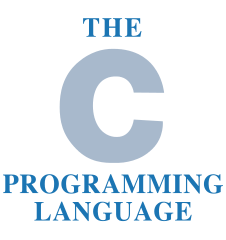
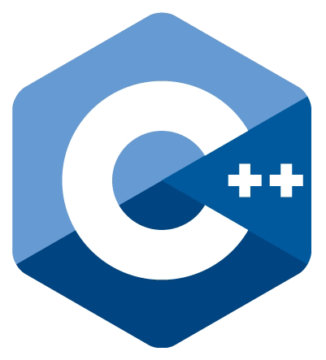

Web
HTML
*****
sémantique++
CSS
****
minimaliste
JavaScript
****
DOM, jQuery, canvas
Programmation

C
*****
ncurses.h

C++
***
POO
Java
****
POO
Python
****
POO, ncurses
Systèmes
GNU/Linux
****
actuellement sous Fedora 25
Bash
*****
scripts système et ncurses
Windows
*
Je ne suis pas utilisateur de Microsoft Windows.
Documents
LaTeX
*****
articles, book, création de paquets, beamer, lettre, CV
Libre Office
***
suite de logiciel rarement utilisée